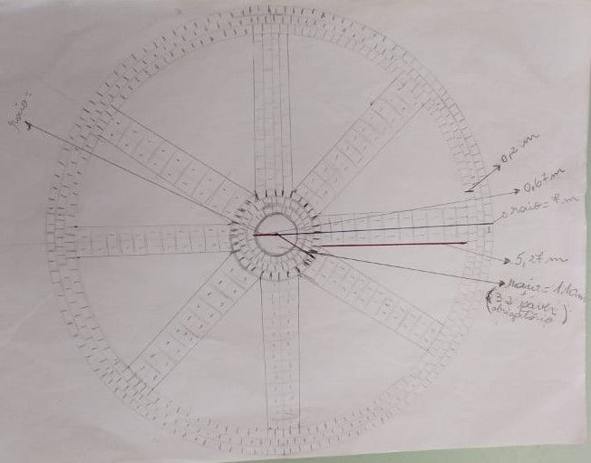
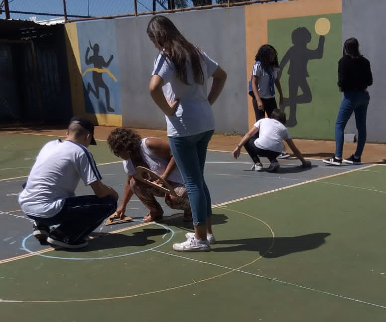
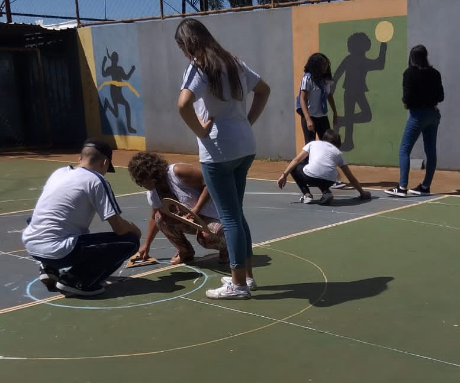
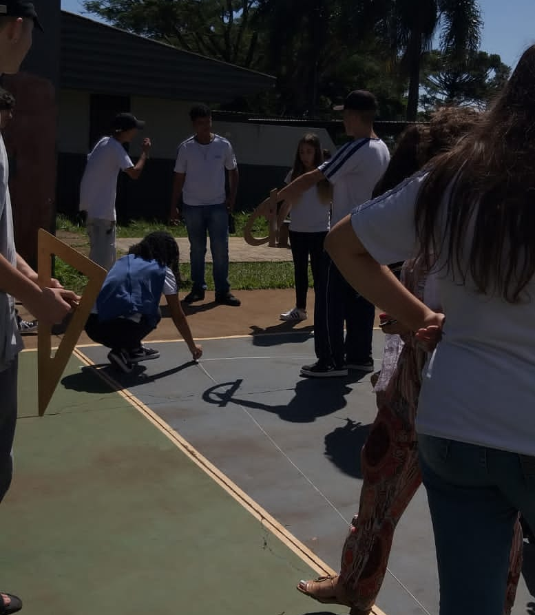
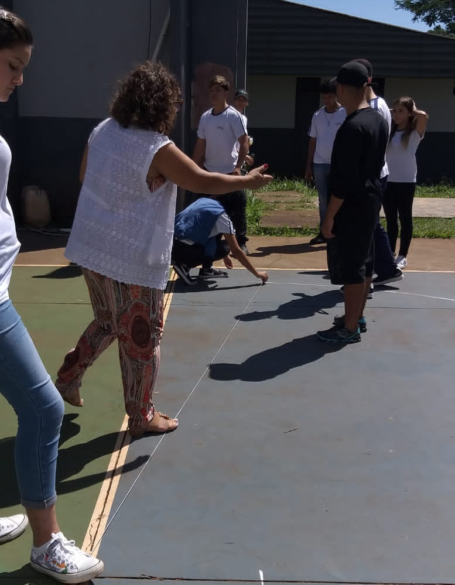
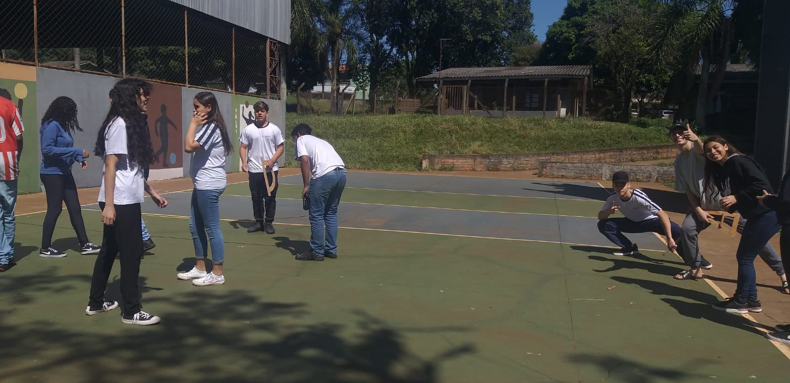
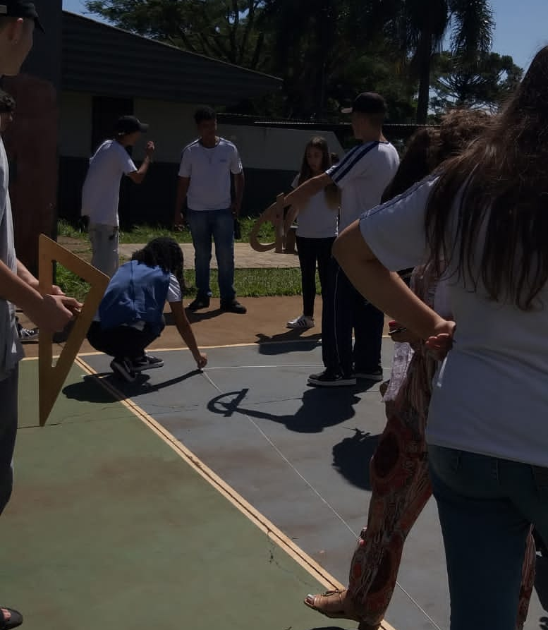
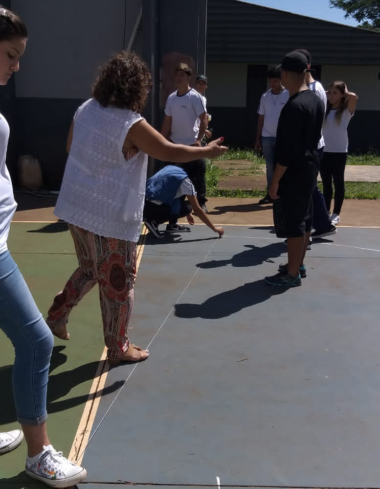
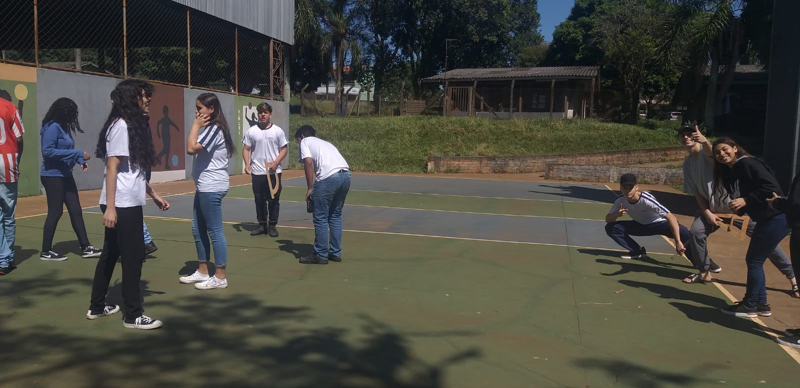

Sobre nosso projeto
. A horta inserida no ambiente escolar pode ser um laboratório vivo que possibilita o desenvolvimento de diversas atividades pedagógicas em educação ambiental e alimentar unindo teoria e prática de forma contextualizada, auxiliando no processo de ensino-aprendizagem e estreitando relações através da promoção do trabalho coletivo e cooperado entre os agentes sociais envolvidos, (MORANGO, 2006).
. O cultivo orgânico é um sistema de produção agrícola ecoló e sustentável, baseado na preservação e no respeito à terra, ao meio ambiente e ao homem. Este sistema é concentrado no ser humano e a base da sustentabilidade é o solo. Praticar agricultura orgânica ou com base agroecológica é, além de tudo, um novomodo de pensar e de se relacionar com as pessoas e com a natureza. (JCM Madali,LC Belarmino, 2015)



 

 




